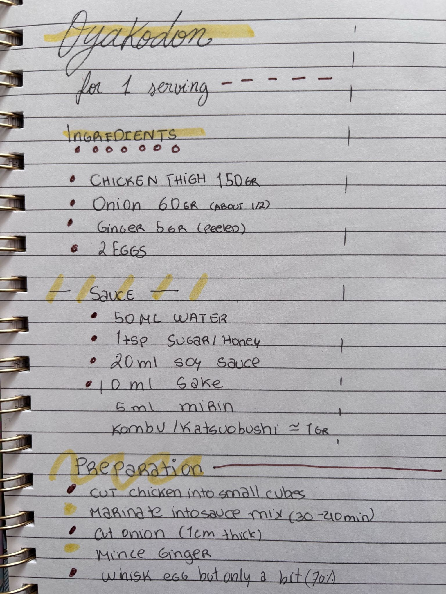
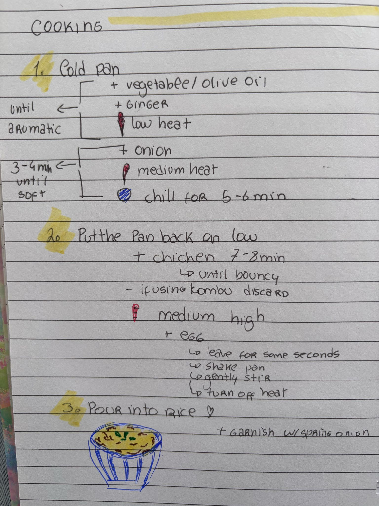

Maria's Oyakodon
This is a dish truly near and dear to my heart, as it was the dish my lovely girlfriend learned to cook while I was away for a month in Japan.

Steamy Oyakodon Over Rice
Ingredients List (per serving):
- 150g Chicken Thigh
- 60g Onion (around 1/2)
- 5g Peeled Ginger
- 2 Eggs
& for the sauce...
- 50ml Water
- 1tsp Sugar/Honey
- 20ml Soy Sauce
- 10ml Sake
- 5ml Mirin
- ~1g Kombu/Katsuoboshi
The recipe is as follows...


Home